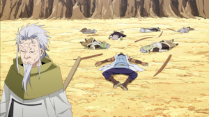
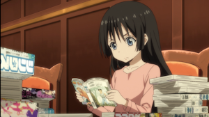
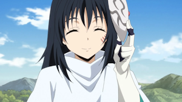
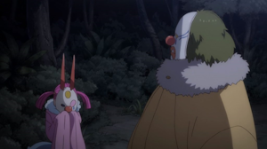

É um isekai, fantasia e ecchi que o cara reincarna como um slime e enquanto descobre seus novos poderes encontra
o dragão Veldora que estava aprisionado/selado dentro de uma caverna, então este grande dragão nomeia o protagonista
de Rimuru, dando a ele proteção divina (agora o Rimuru é broken), e ele dá o nome Tempest para Veldora ficando os dois
com sobrenome Tempest.
Com o seu poder de slime chamado predador, habilidade onde o slime pode absorver qualquer coisa
e ganhar os poderes daquilo, ele absorve o seu novo amigo em busca de livra-lo desse feitiço.
Detalhes
Foi escrito por Fuse e começou como uma light novel depois mangá e aí o anime.
Além disso, as web light novels foram publicadas de graça pela Shōsetsuka ni Narō
que foi fundada 2004 e disponibiliza de graça no seu site, como konosuba, overlord
e herói do escudo.
E o estudio que fez a animação foi a 8-Bit, a mesma que fez Blue lock.
Avaliação
A arte tem pouco molho, mas não é ruim, e o universo é bem aquele genérico de isekai shonen
Tendo nesse mundo os Lordes demônios que governam o mundo por baixo dos panos, tem os dragões,
as criaturas mágicas mais fortes, a igreja que odeia os monstros.
E a única coisa de diferente que tem é dar nomes a criaturas cria um vincula que dá força
para aquele monstro, por exemplo Veldora deu o nome de Rimuru ao protagonista logo ele
ganha força proporcional há do Veldora.
E o desenvolver da história é muito conveniente kkkkkkkkkkkkk, tipo acontecem muitas coisas de graça,
facilitando e muito o crescimento da nação de Jura Tempest, por exemplo existe uma religião que odeia os monstros
e normalmente os Reinos seguem uma religião, na idade média, e nunca é sitado se o Rei dos Anões, Elfos e de Blumond
seguem alguma religião, e agem como se fosso normal conversa com monstros, que no inicio do anime é apresentado
sobre o preconceito com os monstros, no entanto isso é basicamente descartado, tendo um unico reino que
queria acabar com Jura Tempest por serem monstro.
Diferencial/Foco
Como falei antes, o anime é genérico, mas tem um motivo de eu ter gostado, que é o mesmo de Dr. Stone
sendo o tema de construir e desenvolver algo do zero ou uma nação e esse “é” o foco, o objetivo de Rimuru é criar
uma utopia, uma nação onde todos possam viver em harmonia e conforto. E eu gosto de todos os animes que
possuem essa temática, não é à toa que meu anime favorito é Dr. Stone. Mas como a história é conveniente
as coisas acontecem com muita facilidade e ainda mais o anime sendo um isekai, onde o protagonista é
extremamente poderoso e sempre tudo dá certo. E nesse mundo todas as nações sofrem com pobreza,
preconceito e ideais dos moradores se conflitando, e isso não acontece em Juro Tempest, porque todos são
anjinhos e respeitam o'que seu líder diz, que eu acho meio bunda.
Personagens
Milin
Cara porque ela não podia se vestir assim sempre?
Tipo ela fica muito mais estilosa assim do que
a roupa normal dela. Só fizeram uma garotinha
de mil anos.

Hakurou
Ele é muito maneiro, eu não sei direito dizer porque
eu adoro ele, mas quem assistiu sabe.
Olha que frame estiloso do krl, o cara que foi
decapitado ele ainda tem alguns segundos de vida
ai o Hakurou esculacha ele, melhor personagem.

Chloe
Ela era uma aluna da Shizu e agora é do Rimuru,
só coloquei ela aqui porque parece que essa menina
vai ser muito importante no futuro e vai se tornar
uma personagem principal.
Myulan
Olha a aparência dela cara, ela é muito estilosa
E eu acho legalzinho o mini romance que ela tem com o
herói lá não lembro o nome dele.

Shizu
Diferente de Rimuru ela vou invocada pra esse mundo, ela sendo do Japão, mas
na época dela o Japão sse encontrava em guerra, então a shizu é muito velha
mais continuava viva e preservada para a idade que tinha, por conta do
Ifrit.
Uma coisa interessante é que ela apareceu em tipo 3 episódios
e é uma das personagens mais importantes do anime, pois move
o plot inteiro de outros personagens como o Rimuru e a Hinata.
Cenas/Episódios
Esse anime não tem tanto ecchi como normalmente tem em isekais, mas ainda tem, só
que todas as cenas são da Shion e ela é uma personagem de ecchi, então fodase.
Eu nem lembro de muita coisa da primeira temporada, então vou falar mais sobre a segunda.
Olha essa porra de cena, esse estabelecimento é basicamente um puteiro de elfas.
Até aí beleza, é pra ter safadeza e mulheres aparecendo pra satisfazer desejos dos espectadores
estranhos, mas a pior parte disso tudo é porque tem uma FUCKING criança neste estabelecimento.
Bom vamos fingir que essa cena não existe KKKKKKKKKKKKKKK.
Esses personagens também são de outro mundo, mas ao invés de aproveitar esse novo mundo,
como Rimuru e Shizu fizeram, ficam reclamando de como a vida deles era melhor. Logo, para
eles a sua única diversão era matar e lutar contra outras pessoas. Causando muita desgraça para
o grupo de Rimuru.
O reino daqueles 3 caras atacou a capital de Jura Tempest e matou muitas pessoas, aí Rimuru
chega em sua cidade e vê ela toda destruída e o Rigurt tenta esconder os corpos mortos dos
cidadãos, tendo entre eles a Shinon. Só que eu não vejo sentido do Rigurt
querer esconder esse acontecimento, eu não vejo ele sendo esse tipo de líder, mas ok.
Nesse momento Rimuru descobre que a Shion foi morta em batalha, sendo tomado pela raiva
ele vai tentar reviver o seu povo. Essa foi a primeira dificuldade que o Rimuro enfrenta, o resto
era coisas lidaveis e seria mais legal se algum personagem realmente morresse tipo a Shion, só
que depois ela revive quando o Slime se torna Lorde Demônio.

Em busca de vingança e das atrocidades que o Clayman estava fazendo o Rimuru e sua nação foi
atacar o castelo dele. O Clayman fazia parte do complô do ataque à Jura Tempest, e ele faz parte
da trupe dos alerquinos moderados (acho que é esse o nome), e qual é a deles? Tipo esses caras
são dois dos quatro e eles são MUITO fortes, e um deles foi cortado não sangrou e só apareceu depois
tranquilão. E no final da segunda temporada o Clayman morre pelo Rimuru,então esses caras vão se tornar um problema.
Nesse momento tá rolando a reunião dos lordes demônios, tem um nome pra isso, e a Shuna, Soei e Hakurou
estão invadindo o castelo do Lorde Clayman. E finalmente a Shuna vai ter uma cena de combate, ela é
apresentada como uma conjuradora e nunca participou de nenhum combate, apenas cuidava do Rimuru e fazia
uns artesanatos. Enfim, achei maneiro ela poder usar magias sagradas e acabou iluminando o caminho de um
dos subordinados do Clayman e ele parece um personagem interessante, vamo ver como ele vai se desenvolver.
Durante a reunião dos lordes tá havendo uma discussão que tem como assunto a quebra do pacto de não
agressão entre os próprios. Aí o Rimuru refuta ele e blá blá blá e começa uma luta dos capangas
do Rimuru e do Clayman, mas a Milin está do lado de Clayman, lembrando que ela diz ser a super amiga
do protagonista, enfim rola soco pra lá e pra cá e Veldora aparece para salvar o Rimuru e ele começa
a lutar contra a Milin e fica usando golpes de street fighter e dragon ball, e eu adoro essa cena só
por conta disso mesmo KKKKKKKKKKKKKKKKK.
Filme Scarlet Bond
O filme começa falando sobre o ataque que a vila dos ogros sofreu pelos orcs e mostra que teve outro
sobrevivente, o Hiro. Depois de anos ele vai em uma missão na floresta de Jura e encontra seus
amigos de infância. Depois de toda a apresentação dele para Rimuru, o slime vai para o Reino de Raja(Rasha)
ajudar a rainha, que buscava curar o lago de sua nação.
Eu achei maneiro o filme mostrar mais sobre a vila dos ogros, que no anime não é explorado e só comentado,
gerando cenas fofas com o encontro de toda a família, que restou, dos ogros. A partir disso não tem muita
coisa interessante no filme, além da rainha Toa que eu gostei do design dela e de seus ideias, sendo o
clássico de salvar o seu povo e usando à própria energia vital para tal tarefa. Até chegar na parte que
o Hiro se transforma em um monstro diabólico.
A Toa é uma personagem
com personalidade genérica.
A rainha que quer o bem de sua
nação e se sacrifica
pelo seu povo, sendo basicamente
isso.
No entanto, ainda gosto
dela porque mesmo sendo nada de
mais ainda gosto desse tipo
de personagem e ela é muito
estilosa.
O filme é bem ruinzinho mas essa cena é
fenomenal, porque apresenta a personagem
Violeta e a batalha/conversa
deles é ótima também.
Também achei bem memes que o Reino de Raja estava sendo invadido por outro exército e isso foi ignorado no
filme, então foi apenas uma desculpa para o duelo entra Benimaru e Hiro terem um X1. Pelo menos foi maneiro.
Entretanto quando o Hiro começou a virar pedra eu fiquei "que cena foda", mas aí a Toa reviveu ele e fiquei
"ah", mas ela morreu depois aí fiquei "krl pfv termina ai, vai ficar perfeito um final feliz com sacrifícios",
só que para minha infelizidade aquela demônio primordial revive ela. Cara seria um final ótimo se algum desses dois
morrese, porque tem que ser um final 100% feliz cara, eu gosto dos personagens e pá, só que seria uma cena boa
para matar algum personagem, acontece muito nos animes os personagens não morrerem, aí sempre é previsivel os filme.
Porque eles não morrem?
Tipo krl seria tão fodase
se qualquer um dos dois
morrese então o filme só
tem uma cena boa que é a
de cima o resto é mid pra ruim.
53/100
The Slime Diaries
Essa temporada é só fanservice literalmente aparece o Rimuru vestido de coelha vsf, não vale a pena assistir.